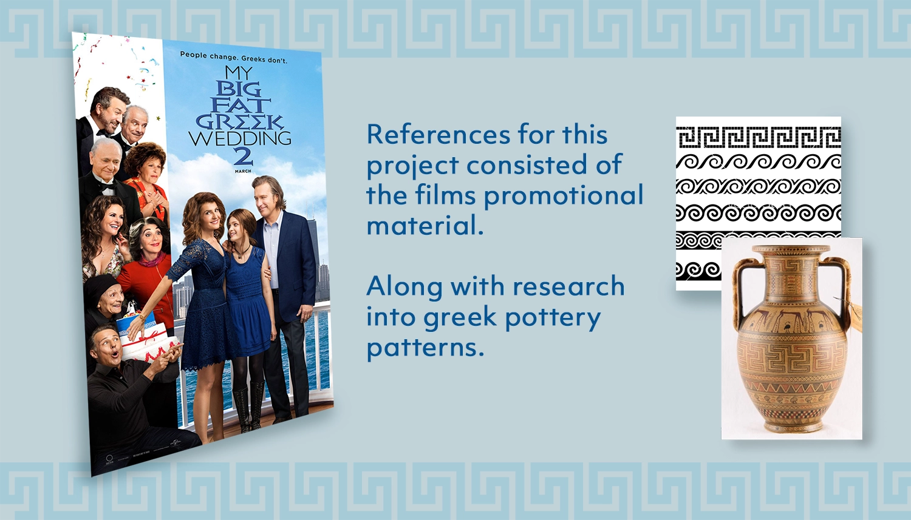

My Role:
- Design and Creation
- Communication with Client
- Management of Event
Client:
- Harbor East Group
Year:
- 2015
About:
This project involved the development of a pre-show sponsor reel, intended to run continuously for an hour preceding the private screening of 'My Big Fat Greek Wedding 2.' The primary objective was to provide attending sponsors, who had invested in the event, with the opportunity to showcase their logos to an audience of approximately 900-1000 individuals. Additionally, the reel served as a promotional platform for highlighting other forthcoming events hosted by Axion Concerts throughout the year.
Challenges:
The project posed two major challenges. First, I had to create the pre-show video without access to the necessary tools at the theater, volunteering personal time due to ongoing managerial duties. Second, communication with the client's graphic design department was challenging due to limited responsiveness. Despite these obstacles, I adapted my workflow, employed creative problem-solving, and achieved success, with the client expressing great satisfaction with the final result showcased at their event.
WORK FLOW
| Photoshop | Slide layout and photo editing. |
| Illustrator | Logo editing and scaling, vector pattern created. |
| Adobe After Effects | Assembly and animating into video sequence. |
| DCP-O-Matic | Conversion of avi file into a DCP file for ingestion into a digital projector. |
Additional Background
During my seven-year management tenure at Landmark Theatres, I successfully coordinated various private movie events, including a particularly challenging one. The client booked five out of our seven auditoriums for an exclusive movie screening, expecting around 900-1000 attendees. They requested an in-house pre-show to showcase event sponsors and promote future group shows.
Traditionally, our theater played content provided by clients or studios. However, as a partial owner of our parent company, this client was unfamiliar with movie theater operations. They assigned content creation to the theater, creating challenges for my boss rather than considering external content creation specialists.
Leveraging my After Effects proficiency and digital projector operation skills, I volunteered to handle the content creation to alleviate potential conflicts during planning. While confident in my design abilities for a simple pre-show video, I faced the challenge of lacking experience in producing DCP (Digital Cinema Package) content. Research led me to DCP-O-Matic, an open-source software for converting video files to a format compatible with our digital projectors.
Additionally, our theater lacked the necessary software and computers for video file creation, requiring me to complete the work at home during my personal time. The final push to finish the project happened in a Cincinnati hotel room with my desktop computer, where I finally received the necessary files to complete the video.

Design Process
Scroll down to view the work flow process for the project.
Project References:
Whenever creating a project for a specific movie themed event the simplest method to come up with a style was to use the prexisting promotional material in order to have a consistent theme. In this case I used My Big Fat Greek Wedding 2's official theatrical poster as the basis for the color choice of blue and also decided to use the characters from the film in the same way both films had placed them on the left side with color being used to seperate the main protagonists from their family.
I also knew that I wanted something animated in the final version so I decided to pick a simple pattern that could be used to loop and create some visual interest in the slides. I did some research into some classic greek patterns from old pottery and decided to go with a geometric wave pattern. I felt this pattern was interesting enough to look at while still not being overly complex enough to distract people when animated.
Initial Layout:
This was the first draft of the basic slide layout for the project. At this point in the process I hadn't received any other companies logos so I left a large space open to place for each image once I received them. This image was useful because it allowed me to test out the conversion of the video file into dcp, and I was able to create a simple test to make sure the resolution looked good on the digital projector.
One of the critques I had at this point was that the pattern layout was across the whole background and I though it might be too distracting with the logos in front. I decided to shift them to the top and bottom in order to make a gap where the logos could be placed without interference from the animated pattern.
Sponser Logos:
This ended up being the biggest challange of the project; here are all of the logos for the sponsers of the event, it was alot of back and forth communication to try and get all these files from the client. They also ended up not all be the correct sizes so some I was able to find online others I spent a few minutes cleaning and rescaling so that they were big enough to be used on a 4k projector. After that I grouped them into slides to be used in after effects.
Fun fact: the client took so long in providing the sponsers and their logos for me that these deliverables intersected with a vacation I aleady had scheduled. In order to complete this project for the event I ended up driving with my destop computer to cinncinati in order to finish the project in a hotel room.
Slide Layouts:
Here's some examples of mockups of the static slides that were created for the event. You can see here that I changed the patterning to not intersect with the companies logo's. I also believe that the reason I ended up grouping all the companies together in the first place was to create a shorter presentation. Because, I ended up having to finalize this in Cincinnati I used Google Drive to get this to the theater for a presentation and the file would have been way too big to have each company have their own slide.

Animated Example of Pattern:
Here's an example to show the pattern moving that I quickly created in After Effects just to add a little visual interest to these static slides. The client liked it, and the event went very well so I called it a success.
Thanks! You've made it through my entire design process,
Click the arrow button on the right to return to the top of the page, click Portfolio to see my selected works, or click Archives and look through other projects.